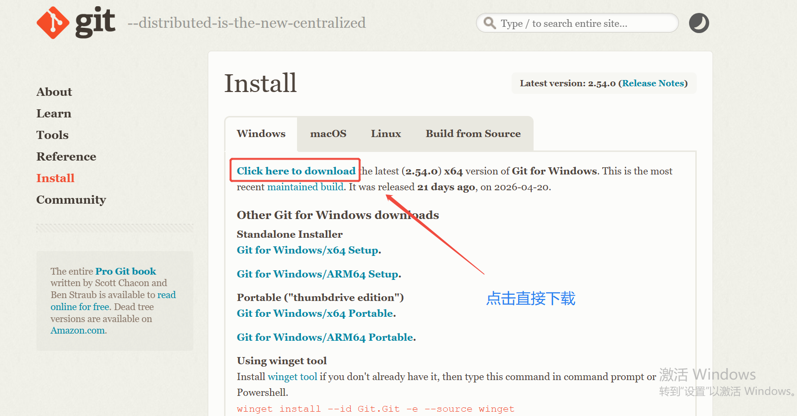
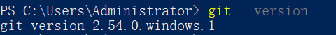
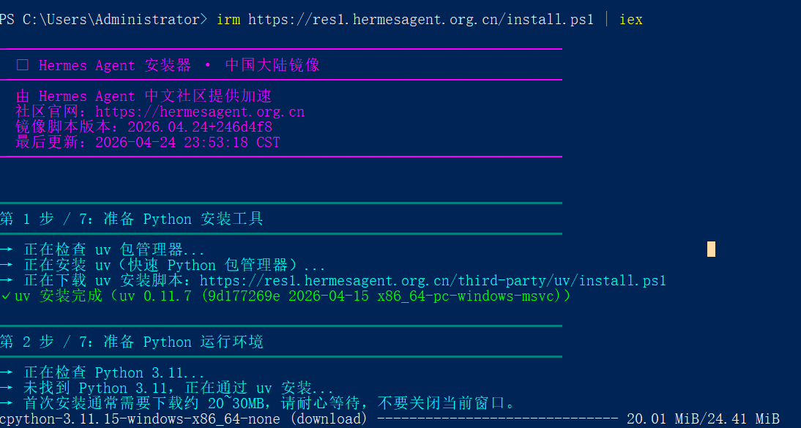
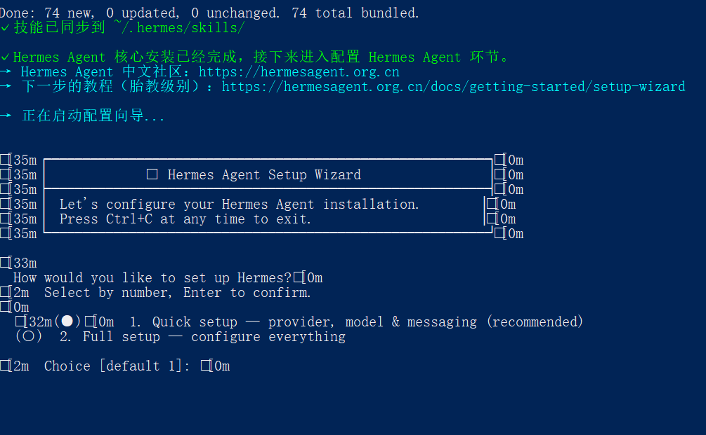
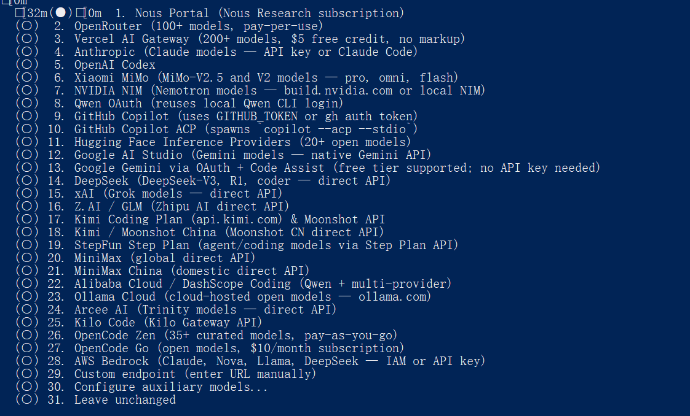
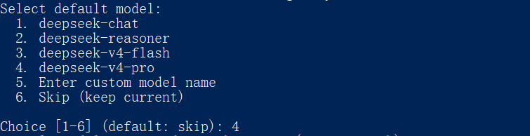
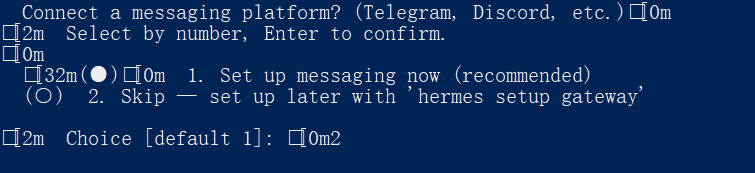

Windows 平台完整安装指南
本教程将指导您完成 Hermes Agent 在 Windows 系统上的完整安装流程，包括 Git 环境配置、安装命令执行以及模型配置等步骤。
安装 Git 是使用 Hermes Agent 的必要前提，系统需要 Git 环境来管理代码与依赖。
步骤 1：下载 Git
访问 Git 官方网站下载安装程序：
URL：https://git-scm.com/?hl=zh-cn

步骤 2：安装 Git
安装过程采用「傻瓜式」操作，连续点击「下一步」即可，直至安装完成。
步骤 3：验证安装
打开 PowerShell，输入以下命令查看 Git 版本信息：
git --version
若出现版本号信息，则说明 Git 安装成功。

步骤 1：以管理员身份打开 PowerShell
在 Windows 搜索框中输入「PowerShell」，右键选择「以管理员身份运行」。
步骤 2：执行安装命令
在 PowerShell 终端中输入以下命令并回车：
irm https://res1.hermesagent.org.cn/install.ps1 | iex

步骤 3：进入配置界面
看到配置界面时，说明已成功进入配置环节，按照向导下一步操作即可。

步骤 1：选择安装模式
在配置界面输入 1，1 是快速安装模式，然后按回车键确认。
步骤 2：选择模型
以选择 DeepSeek 为例：配置界面输入 14 然后回车。

步骤 3：填写 API 密钥与地址
接下来需要填写自己所选模型的 API 密钥及接口地址。
以 DeepSeek 为例，API 地址：https://api.deepseek.com/v1
步骤 4：选择模型环节
可按需选择 deepseek-chat、deepseek-reasoner 等模型版本。

步骤 5：模型详细配置
进入消息平台绑定环节，可输入 2 先跳过，后续可通过对话面板配置。

1. 看到安装成功提示，代表 Hermes Agent 安装完成。
2. 关闭当前 PowerShell 窗口，重新打开终端使配置生效。
3. 启动命令：hermes
首次启动可能需要一些时间进行初始化，请耐心等待。
Q: 安装过程中提示权限不足？
A: 请确保以管理员身份运行 PowerShell，右键选择「以管理员身份运行」。
Q: 下载速度慢或超时？
A: 安装脚本默认使用国内镜像，若仍有问题请检查网络连接。
Q: 如何获取 DeepSeek API 密钥？
A: 访问 https://platform.deepseek.com 注册并创建 API Key。
—— Hermes Agent 安装教程 · 完 ——